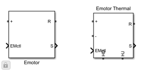
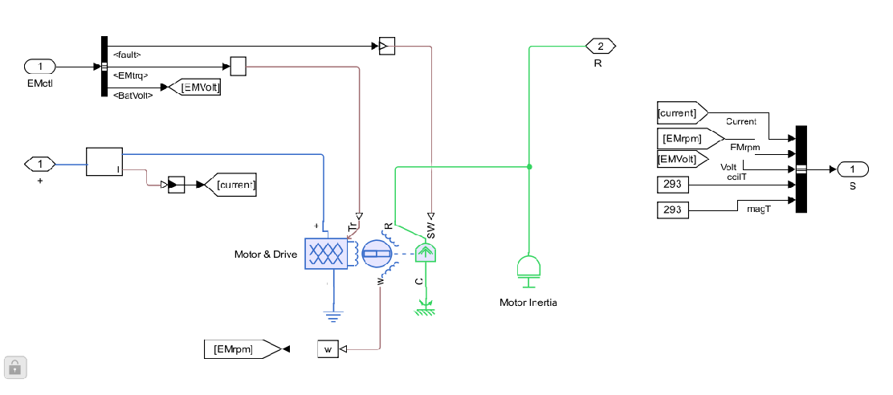
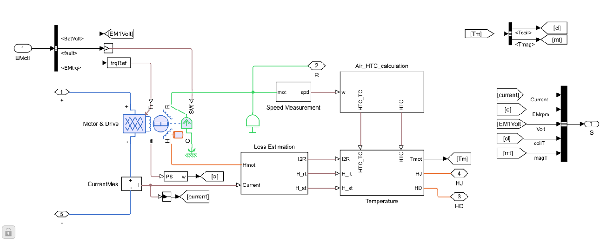

EmotorLib
Shared electric motor library containing reusable motor subsystem blocks for the MotorDrive component.
Library: Library/EmotorLib.slx
Parameters: EmotorLibParams.m, MotorThermalParams.m
Loss Map: MotorLossMap.mat
Contents
Library Overview
The EmotorLib library provides two motor subsystem blocks that are referenced by all MotorDrive fidelity models. The library separates the motor plant into a non-thermal variant (Emotor) and a thermal variant (Emotor Thermal) so that each vehicle-level fidelity can select the appropriate level of detail.
Motor losses are defined by a speed-torque-loss lookup table stored in MotorLossMap.mat. Electrical parameters (max torque, max power, time constant) are defined in EmotorLibParams.m. Thermal geometry and material properties are defined in MotorThermalParams.m.
open_system('EmotorLib')

Emotor (Non-Thermal)
The Emotor block is the non-thermal variant of the motor plant. It models the electrical and mechanical behavior of the motor without any temperature dependence or thermal coupling.
open_system('EmotorLib/Emotor') captureSubsystemImage('EmotorLib/Emotor')

The Emotor block contains the following subsystems:
- Motor & Drive - Simscape block implementing the electric motor and drive electronics. Accepts a torque command through a bus input and produces mechanical torque on the shaft.
- Motor Inertia - Rotational inertia on the motor shaft.
- Bus Selector / Bus Creator - Unpacks the control bus (torque command, enable, limits) and repacks measured outputs (current, voltage, speed, energy).
Ports:
- One Simulink input (control bus)
- One Simulink output (measurement bus)
- One Simscape mechanical rotational port (connects to gear and driveline)
Temperature is treated as a fixed constant. There is no thermal port or coolant coupling.
Used by: MotorDriveGear, which wraps this block with a fixed gear ratio for axle torque transmission.
Electrical Parameters
| Name | Default | Description |
|---|---|---|
| Max motor torque | 220 Nm | Peak torque capability |
| Max motor power | 50 kW | Continuous power rating |
| Torque control time constant | 0.002 s | First-order lag on torque command |
| Initial coolant temperature | 298.15 K | Coolant temperature at simulation start |
| Motor loss map | MotorLossMap.mat | Speed-torque-loss lookup table |
See EmotorLibParams.m for a complete list.
Emotor Thermal
The Emotor Thermal block extends the non-thermal variant with full thermal dynamics. In addition to the electrical and mechanical model it includes loss estimation and thermal coupling for motor windings, rotor, and coolant jacket.
open_system('EmotorLib/Emotor Thermal') captureSubsystemImage('EmotorLib/Emotor Thermal')

The Emotor Thermal block adds the following subsystems on top of the base Emotor model:
- Loss Estimation - Computes copper, iron, and magnet losses from the motor operating point using the speed-torque-loss lookup table in MotorLossMap.mat.
- Air HTC Calculation - Rotor-side and Taylor-Couette convective heat transfer coefficient estimation based on rotor speed and air-gap geometry.
- Current Sensor - Measures phase current for loss computation.
- Thermal Ports (LConn / RConn) - Five Simscape conserving ports that connect to the coolant jacket, stator thermal nodes, and rotor thermal nodes. These ports allow the MotorDrive models to couple with the vehicle coolant loop.
Ports:
- One Simulink input (control bus)
- One Simulink output (measurement bus)
- Two left-side conserving ports (LConn) for coolant interface
- Three right-side conserving ports (RConn) for thermal and mechanical coupling
The thermal model captures stator winding temperature, rotor magnet temperature, and inverter junction temperature. Coolant flow through the jacket removes heat from the motor and inverter assemblies.
Thermal Parameters (Emotor Thermal only)
| Name | Default | Description |
|---|---|---|
| Number of pole pairs | 4 | PM pole pairs on the rotor |
| Number of stator slots | 48 | Stator slot count |
| Stator bore ID | 130.96 mm | Inner diameter of stator bore |
| Stator OD | 198.12 mm | Outer diameter of stator |
| Stack length | 151.38 mm | Axial length of the stator stack |
| Slot packing factor | 0.4 | Copper fill fraction in the slots |
| Coolant jacket channel turns | 5 | Number of spiral coolant channel turns |
| Winding overhang | 0.2 | Fraction of stator stack length |
| Oil flow rate | 5/60000 m^3/s | ATF flow rate for winding cooling |
See MotorThermalParams.m for a complete list.
Differences Between Variants
| Feature | Emotor | Emotor Thermal |
|---|---|---|
| Thermal dynamics | No (fixed temperature) | Yes (stator, rotor, winding nodes) |
| Loss estimation | Efficiency map only | Detailed copper, iron, magnet losses |
| Coolant coupling | None | Coolant jacket via conserving ports |
| Air-gap convection | None | Taylor-Couette and rotor-side HTC |
| Simscape conserving ports | 1 (mechanical) | 5 (mechanical + thermal) |
| Used by | MotorDriveGear | MotorDriveGearTh, MotorDriveLube |